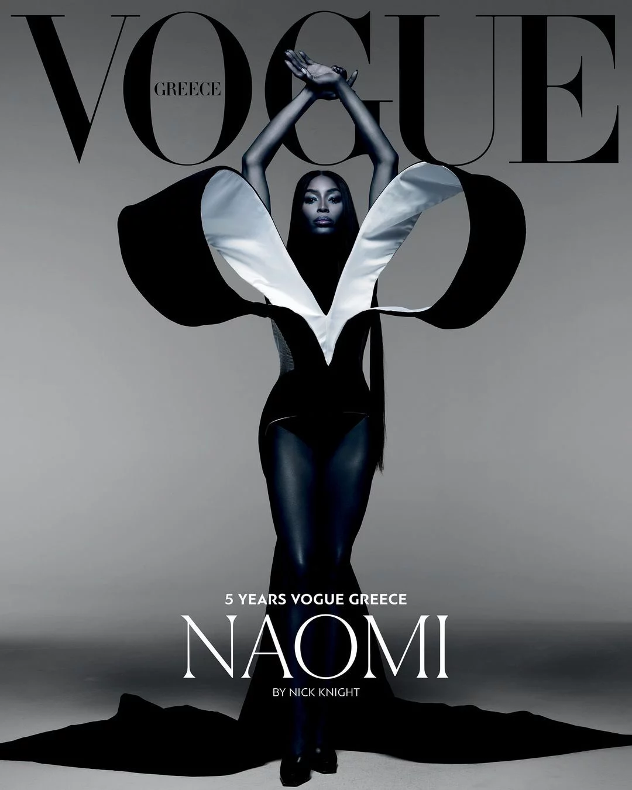
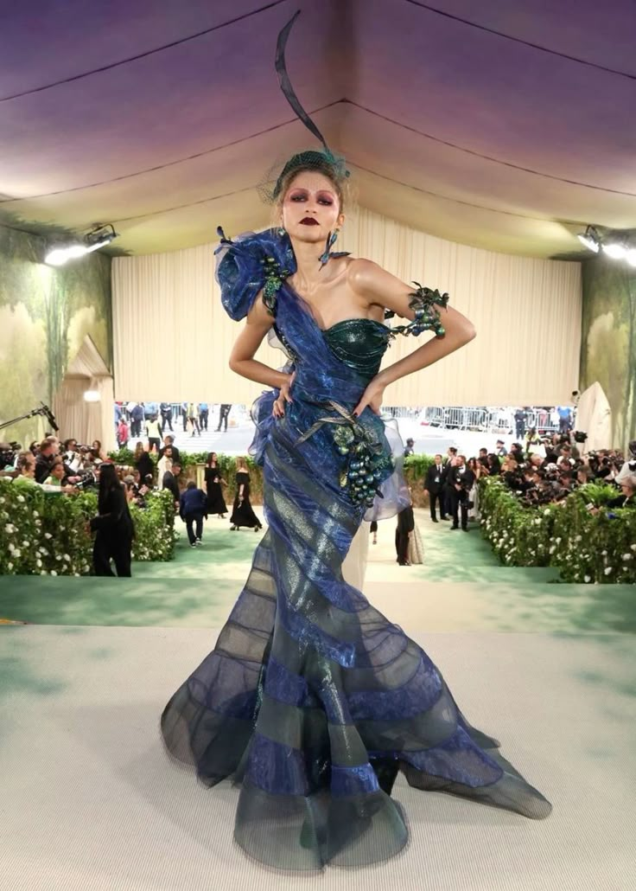
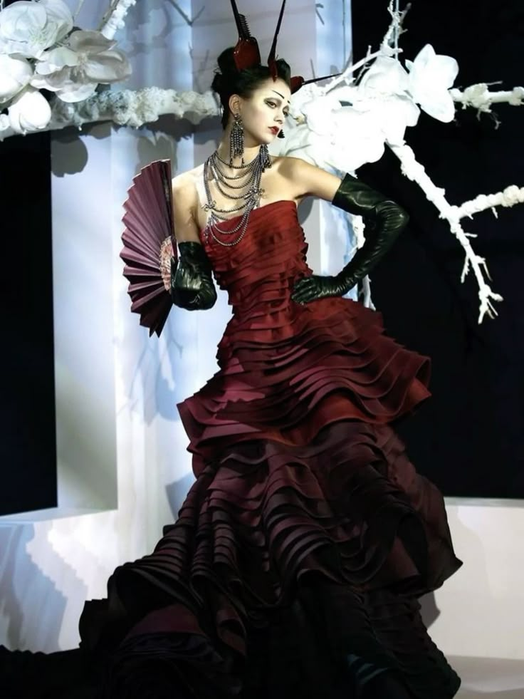
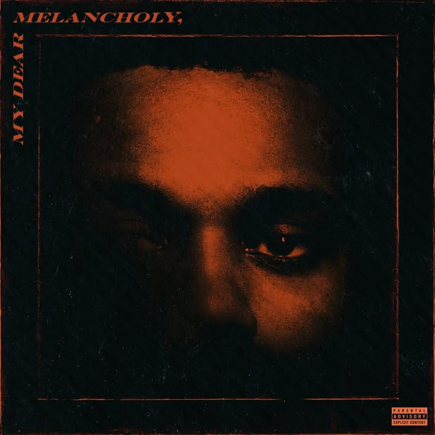
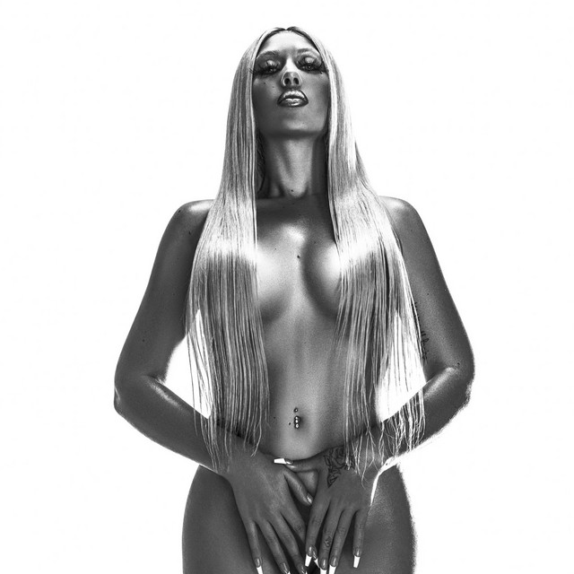
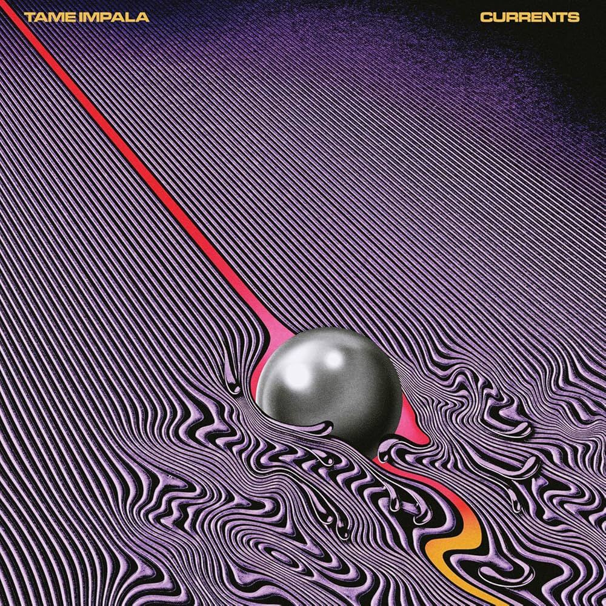

Mode
Ma passion pour la mode a émergé étant adolescent, lorsque j'ai commencé à m'intéresser beaucoup plus à l'art et le transmettre à travers des tenues. Avec le temps, j’ai exploré différents styles pour forger ma propre vision créative. J’aime aujourd’hui observer les tendances, composer des tenues et dessiner des croquis inspirés de ma personnalité.




Musique
La musique occupe une place importante dans ma vie quotidienne. En tant que grand adepte, j'écoute une large variété de genres qui m'accompagnent à chaque moment de ma journée, que ce soit pour me détendre, me motiver ou simplement me divertir. Elle joue un rôle essentiel dans mon bien-être et m'aide à traverser les hauts et les bas.
Des artistes comme The Weeknd, Kali Uchis ou Kevin Parker reflètent différentes facettes de ma personnalité. Ils m’inspirent autant sur le plan personnel que créatif.


